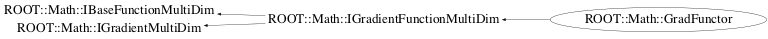

class ROOT::Math::GradFunctor: public ROOT::Math::IGradientFunctionMultiDim
LM 7/2/2014: no needed this : make template ctor of Functor1D and GradFunctor1D not available to CINT s #if defined(__MAKECINT__) || defined(G__DICTIONARY) needed since CINT initialize it with TRootIOCtor class TRootIOCtor;
Function Members (Methods)
public:
| virtual | ~GradFunctor() |
| virtual ROOT::Math::GradFunctor::ImplBase* | Clone() const |
| double | ROOT::Math::IGradientMultiDim::Derivative(const double* x, unsigned int icoord = 0) const |
| virtual void | ROOT::Math::IGradientFunctionMultiDim::FdF(const double* x, double& f, double* df) const |
| ROOT::Math::GradFunctor | GradFunctor() |
| ROOT::Math::GradFunctor | GradFunctor(const ROOT::Math::GradFunctor& rhs) |
| ROOT::Math::GradFunctor | GradFunctor(void* p1, void* p2, unsigned int dim) |
| ROOT::Math::GradFunctor | GradFunctor(void* p1, unsigned int dim, const char* className, const char* methodName, const char* derivName) |
| virtual void | ROOT::Math::IGradientFunctionMultiDim::Gradient(const double* x, double* grad) const |
| virtual unsigned int | NDim() const |
| double | ROOT::Math::IBaseFunctionMultiDim::operator()(const double* x) const |
| ROOT::Math::GradFunctor& | operator=(const ROOT::Math::GradFunctor& rhs) |
private:
| virtual double | DoDerivative(const double* x, unsigned int icoord) const |
| virtual double | DoEval(const double* x) const |
Data Members
private:
| auto_ptr<ROOT::Math::FunctorImpl<ROOT::Math::IGradientFunctionMultiDim> > | fImpl | pointer to base grad functor handler |
Class Charts



Function documentation
double DoEval(const double* x) const
double DoDerivative(double x)
GradFunctor( const Func & f, unsigned int dim )
construct from a callable object of multi-dimension
implementing operator()(const double *x) and
Derivative(const double * x,icoord)
{} GradFunctor(const PtrObj& p, MemFn memFn, GradMemFn gradFn, unsigned int dim )
construct from a pointer to member function and member function types for function and derivative evaluations
{} GradFunctor(void* p1, void* p2, unsigned int dim)
construct for Gradient Functions of multi-dimension
Func gives the function evaluatiion, GradFunc the partial derivatives
The function dimension is required
{ }